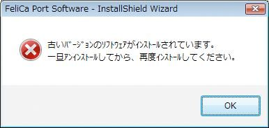
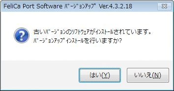
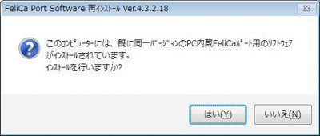
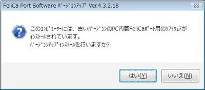
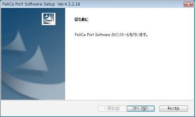
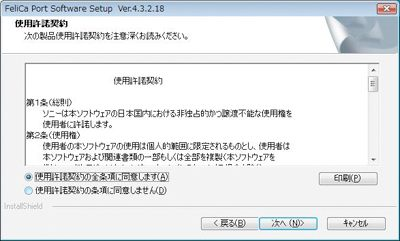
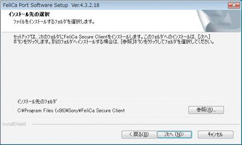
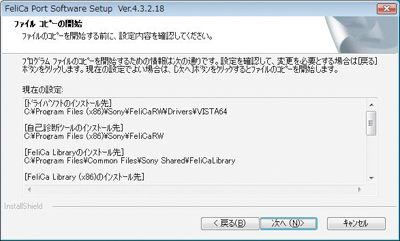
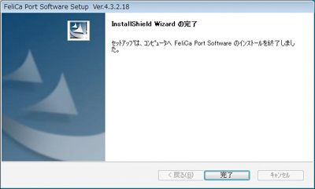
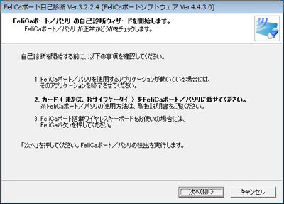

NFCポートソフトウェアのインストールガイド
2.0未満の旧呼称のソフトウェア(パソリ基本ソフトウェア、ソニーFeliCaリーダー／ライターソフトウェア)がインストールされている場合は、下記画面が表示されます。当該ソフトウェアを一旦アンインストールしてから、再度インストールを実行してください。
2.0以上のバージョンがインストールされている場合は、下記画面が表示されます。「はい(Y)」をクリックすると、バージョンアップインストールが行われます。
既に同一バージョンのNFCポートソフトウェアがインストールされている場合は、下記画面が表示されます。「はい(Y)」をクリックすると、再インストールが行われます。
既にPC内蔵NFCポートソフトウェアがインストールされている場合は、下記2画面のいずれかが表示されます。「はい(Y)」をクリックすると、再インストールが行われます
以下、新規インストールの場合です。それ以外の場合は、画面の表示に従ってインストールを行ってください。
インストーラを起動すると上記画面が表示されます。内容を確認して「次へ(N)」をクリックしてください。
使用許諾契約について表示されますので、内容をご確認の上、同意される場合は「使用許諾契約の全条項に同意します(A)」を選択し、「次へ(N)」をクリックしてください。
FeliCa Secure Clientのインストール先を設定します。インストールフォルダーを変更したい場合は、「参照(R)」のボタンでインストール先のフォルダーを選択してください。インストール先に問題がなければ、「次へ(N)」をクリックします。
インストール先を確認します。問題なければ、「次へ(N)」をクリックします。
インストールが行われ、完了を通知する画面が表示されます。
インストール後、コンピューターのUSB端子にNFCポート／パソリを接続することで、NFCポート／パソリがコンピューターに認識され、利用可能となります。
NFCポート／パソリが正しく認識されているか動作確認を行います。NFCポート／パソリをUSB 端子に接続し、FeliCa対応カードをかざしてから、[スタート]-[NFCポート]-[NFCポート自己診断] を選択して起動してください。
NFCポートソフトウェア（旧FeliCaポートソフトウェア）のバージョン確認ができます。
本画面が表示されたら、指示に従い「次へ(N)」をクリックします。
外付けタイプをチェックして、「次へ(N)」をクリックしてください。
自己診断結果が正常に動作した場合は、上記画面が表示されます。
ポート診断とカードとの通信が「ＯＫ」であることを確認してください。
本画面が表示されれば、NFCポート／パソリが正しく動作しています。